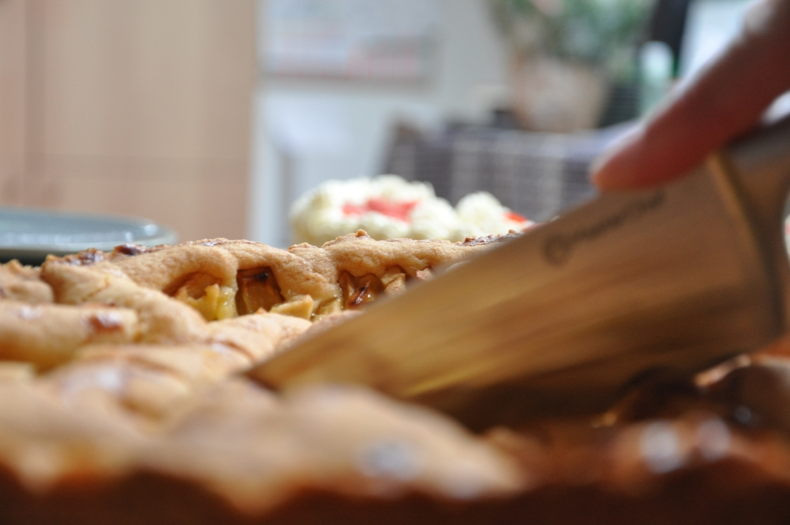
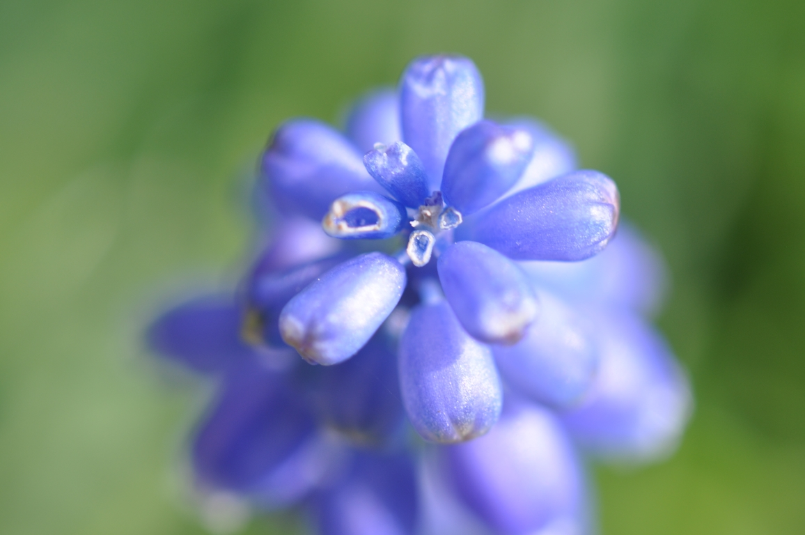
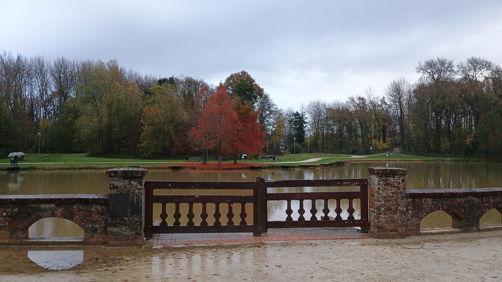

NRG Pallas — Museum ontwerp
Ontwerpen en 3D-modelleren van een museum voor de NRG Pallas opdracht. Ik leerde nieuwe tools en workflows in Blender en ontdekte de grenzen van het programma voor technische modellen.
"Voor deze O&O-opdracht heb ik me volledig gericht op het 3D-modelleren in Blender. Wat goed ging: ik ontdekte nieuwe sneltoetsen en modelling-tools die mijn tempo verhoogden. Wat ik leerde: Blender is niet ideaal voor technische modellen — een CAD-programma zoals Fusion 360 zou preciezer zijn. Ik was verrast hoe positief de opdrachtgever reageerde op het eindresultaat. Volgende keer wil ik eerder een technisch tekening als referentie maken."
Anthura — Kas reinigingsconcept
Idee ontwikkelen voor het veilig schoonmaken van de binnenkant van een glazen kas bij bloemenveredelaar Anthura. Technologisch concept bedacht en technisch getekend.
"Bij Anthura heb ik geleerd hoe je communiceert met een echte opdrachtgever. Het was soms lastig om hun verwachtingen goed te begrijpen — de eerste presentatie was te technisch. Door meer te luisteren en samen te vatten wat de klant écht wil, werd de samenwerking beter. Ik zou de volgende keer eerder een klantinterview houden om requirements helder te hebben."
STI Engineering — Productpresentatie
Ontwerpen van een oplossing voor het gemakkelijker presenteren van producten bij STI Engineering. Onderzoek gedaan en een ontwerp uitgewerkt in Blender.
"Bij STI Engineering heb ik geleerd hoe je een ontwerp onderbouwt met onderzoek. Het was mijn eerste keer dat ik zowel onderzoek als 3D-modelleren combineerde. Ik merkte dat ik soms te snel wilde beginnen met modelleren terwijl de onderzoeksfase nog niet klaar was. Volgend project wil ik een duidelijkere planning maken met vaste deadlines per fase."

Weer-app — Buienradar API
Een weer-app gebouwd met HTML, CSS en JavaScript die gebruik maakt van de Buienradar API. De app toont overzichtelijk de weersverwachting met extra functies.
"De weer-app was mijn eerste project met een externe API. Het ophalen van data lukte al snel, maar het netjes tonen van die data kostte meer tijd dan verwacht — JSON structuren begrijpen is een vak apart. Ik ben trots op het eindresultaat en heb er veel van geleerd over asynchrone JavaScript. Volgende keer wil ik error-handling eerder toevoegen."
Ursem Modulair Bouw — Productstorage
Het efficiënter maken van de productopslag bij Ursem door het bieden van een slimme oplossing. Kritisch denken en creatief probleemoplossen stonden centraal.
"Bij Ursem draaide het om kritisch denken: wat is het echte probleem, niet het symptoom? Die vraag heeft mij geleerd om verder te kijken dan de eerste oplossing. In het begin gingen we te snel naar conclusies. Door meer vragen te stellen aan de opdrachtgever kwamen we tot een betere analyse. Dit neem ik mee naar elk volgend project."

Fotografie — Landschappen & macro
Persoonlijk fotoproject waarbij ik landschappen en macro-onderwerpen fotografeer. Meerdere jaren hofleverancier voor de familiekerstkaart.
"Fotografie leerde mij kijken — echt kijken. Geduld, compositie, licht: het zijn vaardigheden die ik ook buiten fotografie gebruik. Bij een macro-foto heb je veel geduld nodig voordat je het perfecte moment hebt. Die precisie en het experimenteren met instellingen heeft me ook geholpen bij technisch werk zoals 3D-modelleren."